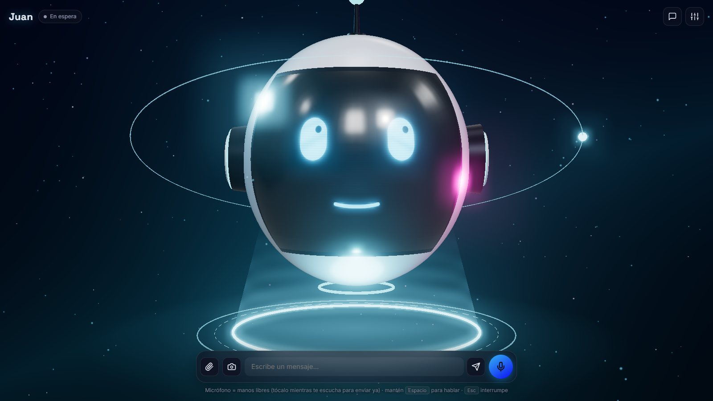

Conversación por voz
Le hablas con las manos libres: detecta cuándo terminas tu frase, la transcribe y empieza a contestar desde la primera oración.
Una cabeza robot flotando en el espacio con la que conversas por voz. Mira por tu cámara, entiende las imágenes que le muestras y habla con labios sincronizados. Su personalidad se cambia en segundos.
Es el avatar real, no un video: mueve el ratón y te sigue con la mirada.
Pensado para charlas, aulas y demostraciones en vivo: funciona en cualquier computadora con navegador, incluso en el celular.
Le hablas con las manos libres: detecta cuándo terminas tu frase, la transcribe y empieza a contestar desde la primera oración.
Con la cámara activa mira lo que le enseñas. También entiende fotos que arrastras o pegas, y puede leer textos e identificar objetos.
Las formas de la boca están pensadas para el español (a, e, i, o, u, m, f…) y siguen la duración y el volumen reales de la voz.
Se pone feliz, triste, sorprendido, pensativo o enojado según lo que dice, y mira hacia arriba cuando está pensando.
Nombre, carácter, color y voz se cambian desde la interfaz sin tocar código. Trae seis personalidades listas para usar.
Linux, Windows o Mac con Firefox, Chrome, Edge o Safari, y también Android y iPhone. Voces nativas de 22 países hispanohablantes.
Juan es el co-presentador digital de Yeffri Salazar (Yeffrimic) en charlas para niños y jóvenes de 10 a 17 años. Es bromista, rápido y un poco sabiondo, habla como guatemalteco y tiene una misión: inspirar a los patojos a entrar a la tecnología.
Un servidor Node sin dependencias protege la clave de Groq y genera la voz. El navegador hace todo lo demás.
Un detector de voz propio graba tu frase y sabe cuándo terminaste.
Whisper en Groq convierte tu voz en texto en menos de un segundo.
Un modelo con visión responde, usando la foto de la cámara si hace falta.
Voces neuronales en español, frase por frase mientras sigue pensando.
Labios, ojos y emociones en una escena 3D con Three.js.

La app: micrófono manos libres, cámara, imágenes y personalidad desde Ajustes.
Solo necesitas Node.js y una clave gratuita de Groq. No hay nada más que instalar.
# 1. Descarga el proyecto $ git clone https://github.com/yeffrimic/avataresrobots $ cd avataresrobots # 2. Pon tu clave de console.groq.com/keys $ cp .env.example .env # 3. Arranca y abre http://localhost:3000 $ npm start # Opcional: usarlo desde el celular (HTTPS en tu red) $ npm run cert